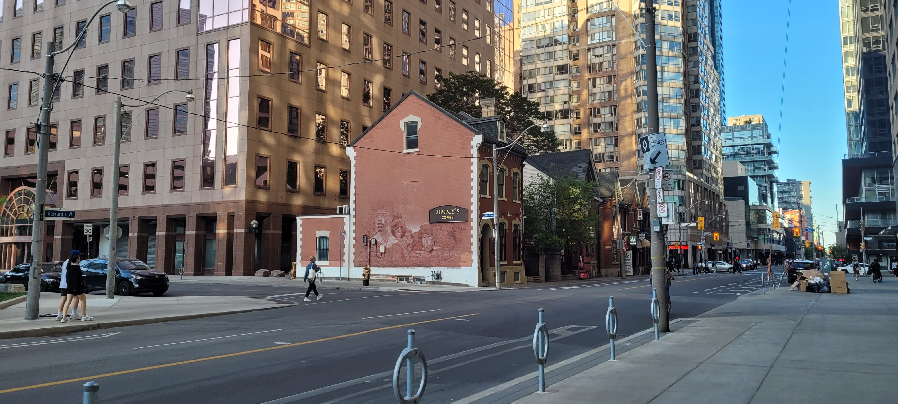
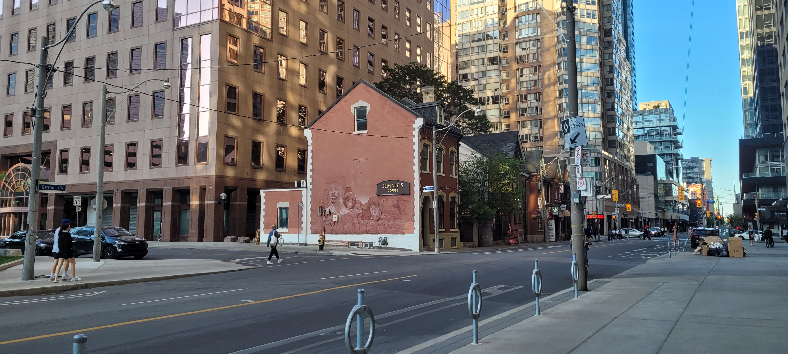

Étudiant passionné par l'automatisme, l'informatique et l'électronique, je développe mes compétences à travers divers projets académiques et personnels.
Mon parcours
Je suis un étudiant passionné par les nouvelles technologies, l'informatique et l'impression 3D. Mon portfolio met en avant mes projets académiques et personnels. De plus, je décris mes compétences techniques acquises durant ma formation.
Suiveur de ligne
Ce projet consiste en la création d'un robot suiveur de ligne à l'aide de capteurs infrarouges et d'un microcontrôleur Arduino. Ce projet a permis de mettre en œuvre des compétences en électronique, programmation et robotique.
Application de gestion des contrats de location de véhicules
Une application permettant à une agence de location de véhicules de gérer les contrats, les clients et les véhicules disponibles. Ce projet a été réalisé en utilisant des technologies web telles que HTML, CSS, JavaScript et PHP.
Conception d'un bloc d'alimentation
Ce projet a consisté à concevoir un bloc d'alimentation pour un système électronique spécifique. Il a permis de développer des compétences en électronique de puissance et en gestion des circuits.


 
